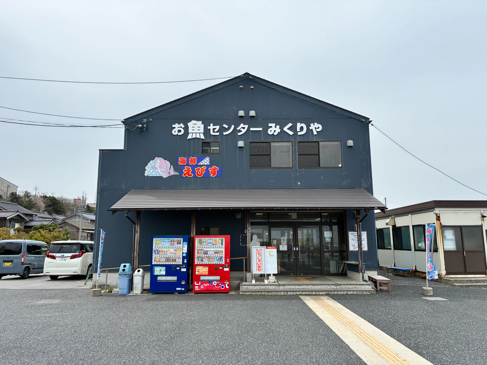
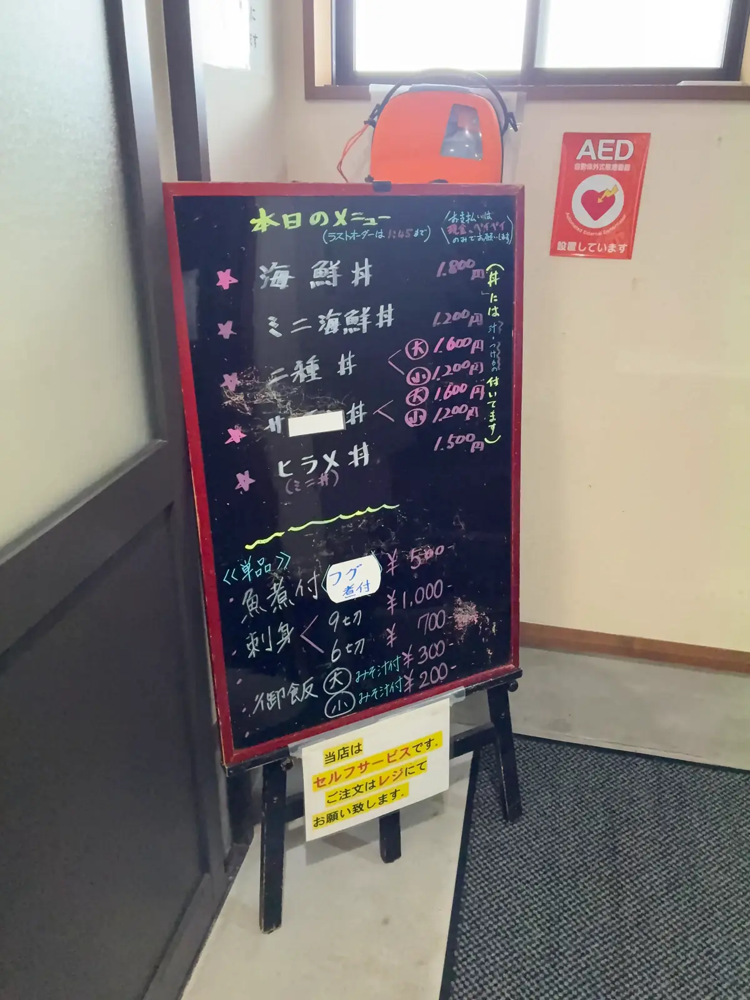
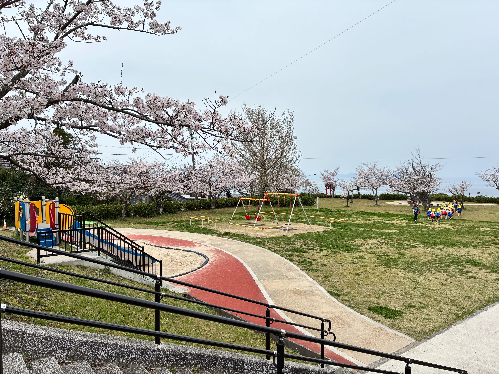
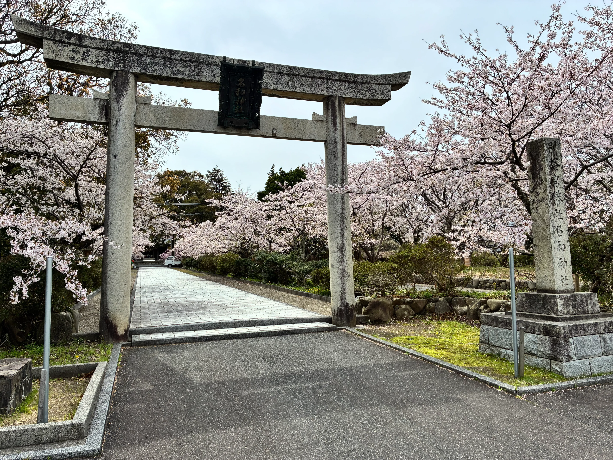
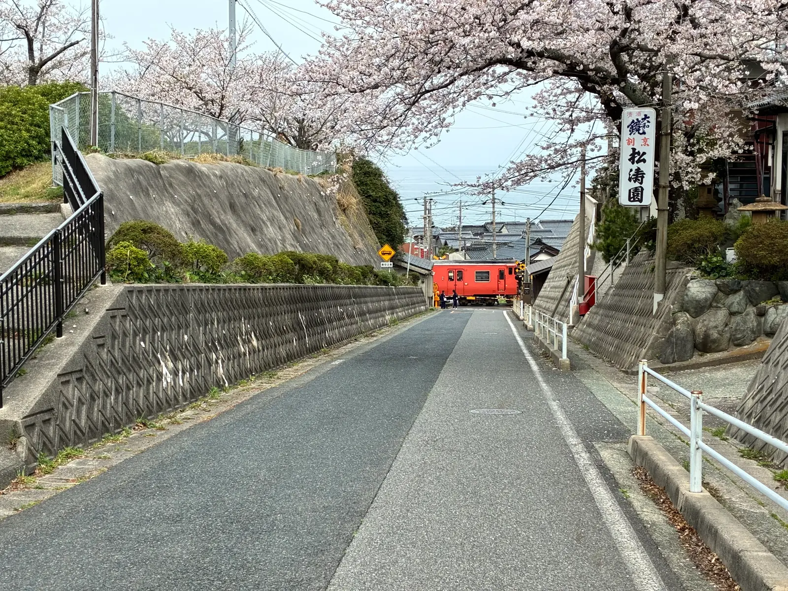
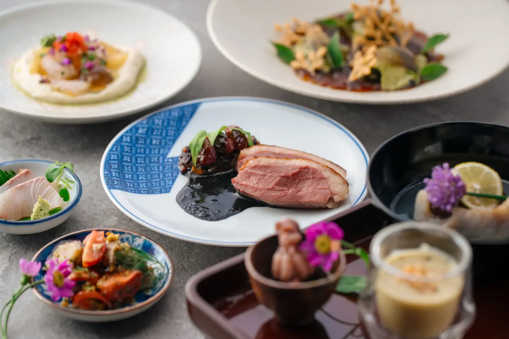
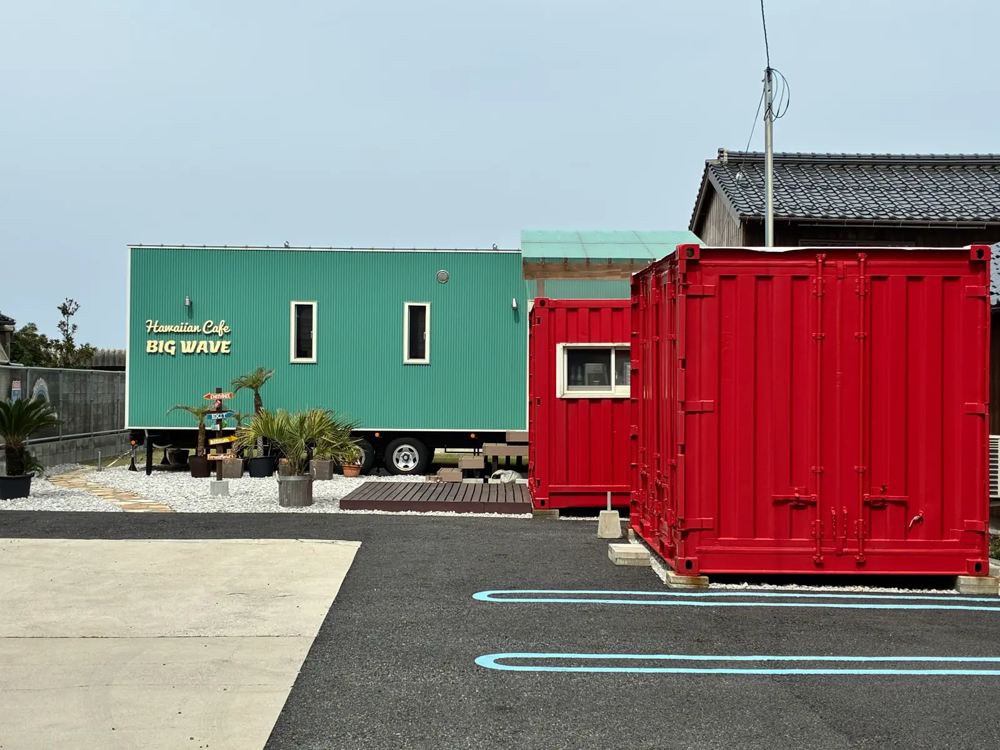
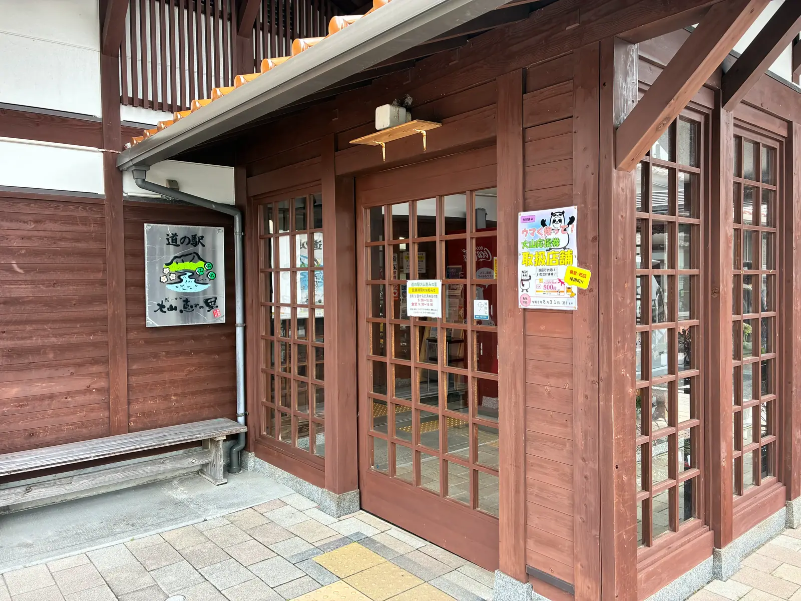
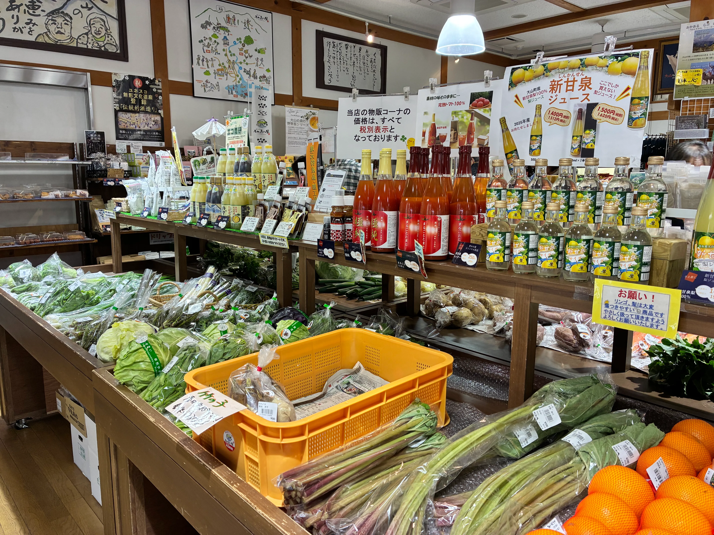
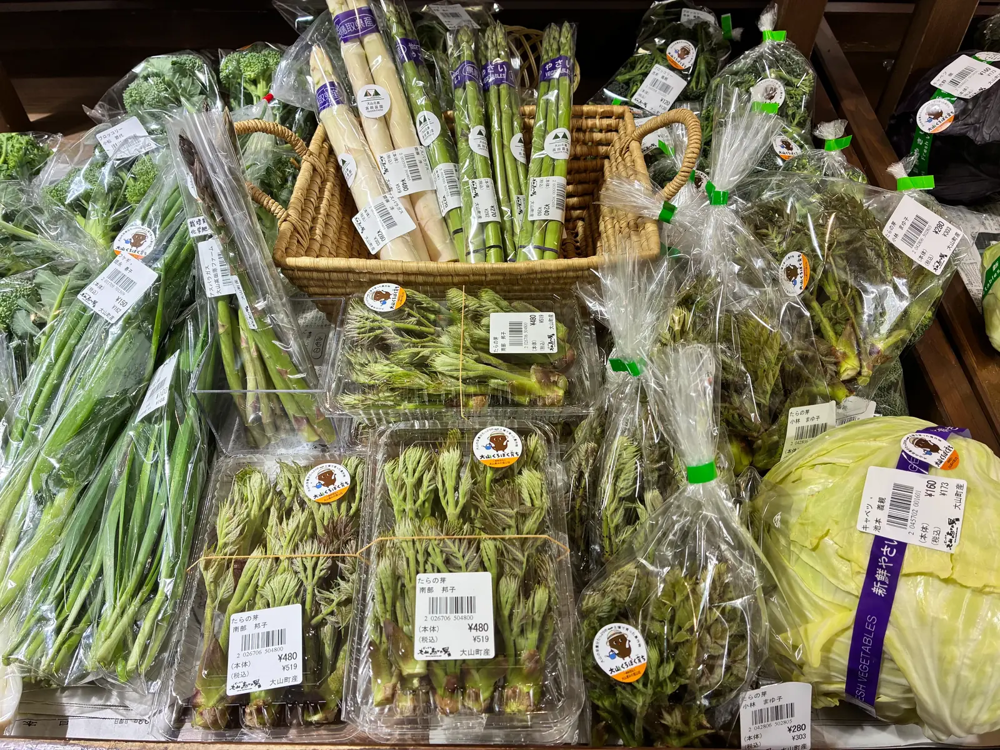

주변 관광 가이드
다이센초의 풍요로운 자연과 맛집을 마음껏 즐기다
해변・바다 액티비티
木料海岸 (기료 해안) — 소박하고 아름다운 모래 해변
DAISEN UMIHOTARU에서 차로 약 5분 거리에 위치한 木料海岸 (기료 해안)은 현지인들에게 오래전부터 사랑받아 온 다이센초의 해수욕 명소입니다. 소박한 모래 해변이 특징으로, 상업화되지 않은 자연 그대로의 비치에서 프라이빗 비치와 같은 분위기를 만끽할 수 있습니다. 여름에는 가족 단위 여행객과 관광객으로 북적이며, 오래된 시설이지만 샤워 설비도 갖추고 있어 해수욕을 즐기실 수 있습니다. 특히 저녁에는 아름다운 석양이 동해에 지는 풍경을 감상할 수 있습니다. 여름 가족 여행이나 친구와의 그룹 여행에 딱 맞는 장소입니다.
수온이 가장 쾌적한 계절. 파도도 잔잔해서 어린 아이를 동반한 가족에게도 최적입니다.
御来屋漁港 (미쿠리야 어항) — 신선한 지역 생선과 해산물
DAISEN UMIHOTARU 바로 근처에 위치한 御来屋漁港 (미쿠리야 어항)은 현역 어항으로서 매일 많은 어선이 드나들고 있습니다. 어항 내에는 지역 어류 직판장이 있어 그날 잡은 신선한 해산물을 구입할 수 있습니다. 회용 고급 생선부터 조림에 적합한 작은 생선까지 다양한 종류가 진열됩니다. DAISEN UMIHOTARU에서는 낚시 도구 유료 대여도 하고 있으며, 유어선 배낚시 체험 수배도 가능합니다. 관심이 있으시면 사전에 숙소로 연락해 주시면 준비해 두겠습니다.


어항 근처의 '오사카나 센터 미쿠리야'에서는 신선한 해산물 덮밥과 회를 맛볼 수 있습니다.
계절마다 제철 생선이 바뀌며, 직판장에서는 일년 내내 신선한 해산물을 구입할 수 있습니다.
다이센의 자연・아웃도어
다이센 화이트 리조트 — 사계절을 즐기는 리조트 체험
DAISEN UMIHOTARU에서 차로 약 25분 거리의 다이센 화이트 리조트는 서일본을 대표하는 스키 리조트입니다. 겨울 스키・스노보드 시즌에는 높은 품질의 슬로프와 충실한 시설로 초보자부터 상급자까지 안심하고 즐길 수 있습니다.
초보자를 위한 스쿨도 풍부합니다.
다이센지・오가미야마 신사 — 역사와 단풍의 명소
DAISEN UMIHOTARU에서 차로 약 25분 거리의 다이센지는 오랜 역사를 가진 고찰로 알려져 있으며, 일본 국가 중요문화재로 지정되어 있습니다. 다이센 신앙의 중심지로서 많은 참배객에게 사랑받고 있으며, 계절마다 다른 표정을 보여줍니다. 참배길에는 고목들이 늘어서 있어 깊은 숲의 분위기를 느끼며 참배할 수 있습니다. 가을 단풍 시즌(10월 중순~11월 중순)은 특히 아름답고, 산이 붉게 물든 풍경은 숨이 멎을 정도의 아름다움입니다. 오가미야마 신사와 함께 참배하는 코스는 다이센초를 대표하는 역사 문화 체험이 됩니다.
참배길이 단풍으로 물드는 가장 아름다운 계절. 사진 애호가에게도 인기입니다.
다이센 마키바 미루쿠노사토 — 목장 체험과 맛집
DAISEN UMIHOTARU에서 차로 약 25분 거리의 다이센 마키바 미루쿠노사토는 해발 900m 고지대에 펼쳐진 목장입니다. 방목된 소를 가까이에서 볼 수 있습니다. 시설 내에서 구입할 수 있는 진하고 크리미한 소프트 아이스크림은 많은 관광객에게 사랑받고 있습니다. 치즈, 버터, 요구르트 등도 구입할 수 있어 다이센초의 기념품으로 인기입니다. 아래로는 동해를 바라볼 수 있어 경관도 훌륭한 명소입니다.
신록부터 가을 풍경까지, 계절마다의 아름다움을 즐길 수 있습니다.
다이센 너도밤나무 숲 워크 — 자연 산책과 하이킹
다이센의 자연을 가까이에서 느끼고 싶은 분에게는 다이센 너도밤나무 숲 워크를 추천합니다. 수령 300년 이상의 너도밤나무 거목이 늘어선 숲속을 걷는 코스로, 초보자용부터 상급자용까지 다양한 루트가 설정되어 있습니다. 특히 신록의 계절(5월~6월)과 가을(9월~10월)은 자연 관찰의 베스트 시즌입니다.
봄에는 산나물 채취 체험도 가능하며, 산의 은혜를 직접 채취하여 그 자리에서 조리하는 귀중한 체험을 할 수 있습니다. 자연 속에서의 깊은 호흡은 도시의 피로를 치유하고 심신의 리프레시에 최적입니다.
名和公園 (나와 공원) — 숙소에서 걸어갈 수 있는 벚꽃 명소


DAISEN UMIHOTARU에서 걸어갈 수 있는 名和公園 (나와 공원)은 현지에서 인기 있는 꽃놀이 명소입니다. 봄에는 만개한 벚꽃이 가로수길을 수놓고, 놀이기구와 그네도 있어 어린이를 동반한 산책에도 딱 맞습니다. 바다가 보이는 언덕에 위치해 있어 여유로운 시간을 보낼 수 있습니다.
현지 꽃놀이객으로 북적이는 숨은 명소. 놀이기구도 있어 가족 단위에 최적입니다.
名和神社 (나와 신사) — 유서 깊은 신사와 벚꽃

DAISEN UMIHOTARU에서 걸어갈 수 있는 名和神社 (나와 신사)는 남북조 시대의 무장 나와 나가토시를 모신 유서 깊은 신사입니다. 돌로 만든 도리이와 참배길의 벚꽃이 아름답고, 봄에는 각별한 운치를 즐길 수 있습니다. 고요한 경내는 산책에도 최적이며, 지역의 역사에 접할 수 있습니다.

신사 주변의 언덕길도 벚꽃이 아름답고, 여유로운 산책을 즐길 수 있습니다.
온천・릴랙세이션
다이센 주변의 당일치기 온천 시설
다이센초 주변에는 라비스파, 유메 온천, 나카야마 온천, 고엔유인 등 여러 당일치기 온천 시설이 있으며, DAISEN UMIHOTARU에서 차로 15분 정도로 접근성도 좋습니다. 소규모이지만 현지인에게 사랑받는 온천부터 본격적인 스파 시설까지 다양한 선택지가 있습니다.
맛집・식사
제휴 레스토랑 '御厨 Mikuri (미쿠리)'

DAISEN UMIHOTARU와 제휴하고 있는 御厨 Mikuri (미쿠리)는 다이센초의 신선한 식재료를 사용한 본격적인 요리를 제공하는 레스토랑입니다. 지역산 채소, 신선한 지역 생선, 양질의 고기를 사용한 창작 요리가 방문하는 손님의 입맛을 만족시킵니다. 사전 예약으로 그룹을 위한 특별 코스 요리도 가능합니다.


하와이안 카페 BIG WAVE

DAISEN UMIHOTARU 바로 근처에 있는 하와이안 카페 BIG WAVE는 컬러풀한 컨테이너가 눈에 띄는 유니크한 카페입니다. 해변의 분위기를 느끼며 부담 없이 들를 수 있는 명소입니다.
미치노에키 다이센 메구미노사토 — 지역 식재료와 기념품


DAISEN UMIHOTARU에서 차로 약 5분 거리의 미치노에키 '다이센 메구미노사토'는 다이센초의 지역 특산품이 갖춰진 쇼핑 명소입니다. 신선한 지역 채소, 수제 조미료, 감귤류 등이 진열되어 있어 BBQ나 자취 요리를 위한 식재료 조달에도 편리합니다.

봄에는 죽순이나 고사리 등의 산나물이 매장에 진열됩니다. 다이센의 은혜를 맛볼 수 있는 계절 한정 즐거움입니다.